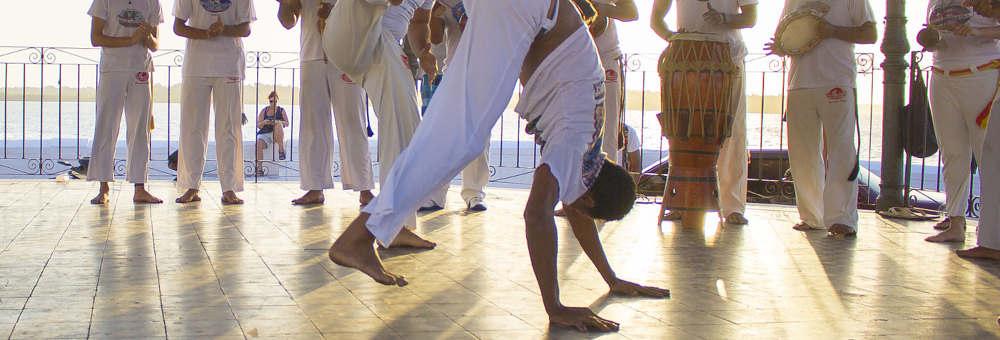
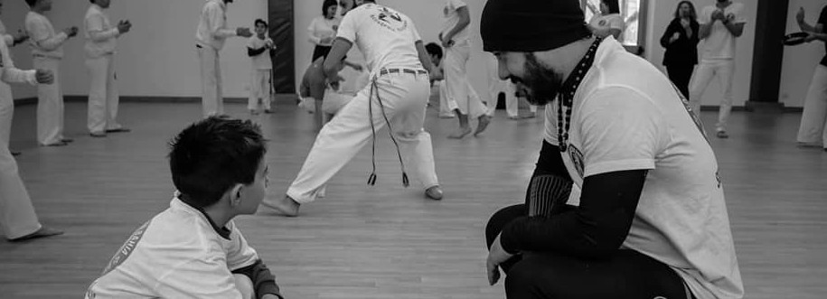

Cosa

La capoeira è un'arte marziale brasiliana, caratterizzata da elementi espressivi come la musica e l'armonia dei movimenti (per questo spesso scambiata per una danza).
Praticamente si tratta di una sintesi di lotta, acrobazie, canti e musica mutuata dal periodo schiavista in piena colonizzazione portoghese: gli schiavi africani, destinati alle piantagioni, si allenavano nei combattimenti utilizzando tecniche di attacco e difesa, calci, prese, schive, dissimulando la lotta con elementi di danza, al fine di non insospettire i colonizzatori.
Nata e diffusa inizialmente a Bahia, si è trasformata poi in una pratica spettacolare: i capoeiristi formano un grande cerchio, suonano le percussioni e incitano cantando i lottatori che a due a due si confrontano con una tecnica unica e affascinante, per molti versi simile a una danza.
Wikipedia
Dove

Durante l'ultimo anno ci siamo adattati a uno stile di vita sempre più sedentario e introverso, i necessari provvedimenti nazionali rimarranno per sempre tra i nostri ricordi e tra quelli dei nostri familiari. Cosi facendo, ci siamo abituati ad astenerci da nuovi rapporti sociali, anche quelli con le opportune precauzioni.
Con l'arrivo della bella stagione è arrivato il momento di riappropriarsi del naturale modo di rapportarci con gli altri: La Capoeira è aggregazione.
Da cittadini della nostra città abbiamo la fortuna di avere uno parco di fronte al mare: il Foro Italico. Abbiamo intenzione avviare una serie di lezioni introduttive, gratuite e all'aria aperta, rispettando le dovute accortezze di sicurezza. Se hai dei figli, è fantastico, la Capoeira è fondamentale per lo sviluppo psicofisico dei bambini e ne stimola la capacità motorie, sociali e il rispetto per gli altri.
La Capoeira è meravigliosa se fatta in tanti: abbiamo bisogno di te, indipendentemente dalla tua età o genere.
Biografia
Istruttore Francesco Bellomia, detto Macaco

Comincia a praticare Capoeira nel 2001 a Palermo. Studia con diversi maestri a partecipa a stage e workshop in tutta Italia, conoscendo alcuni dei Mestre internazionali più importanti in attività.
Tiene il primo corso nel 2004, presso il liceo da lui frequentato. Nel 2006 parte e trascorre un anno ad Ancona, tra esperienze d'insegnamento e di apprendimento nel variegato panorama della Capoeira del centro Italia, incontrando molti Mestre e gruppi diversi. Nello stesso periodo frequenta la Palestra Comunale di Ginnastica Artistica della città.
Tornato a Palermo, dà inizio a un corso di Capoeira a Bagheria, che durerà un paio d'anni. Contestualmente impiega le pause estive lavorando come animatore e intrattenitore in diverse strutture turistiche del sud Italia, portando la Capoeira negli spettacoli su palchi e arene. Nel 2011 comincia a insegnare Capoeira stabilmente a Palermo, avviando un corsi per bambini e adulti che proseguono tutt'oggi. Nel corso del tempo collabora col Comune in progetti di attività fisica per il recupero di minori provenienti da quartieri a rischio e l'integrazione di migranti minori non accompagnati, insegnando la Capoeira come strumento pedagogico e di aggregazione sociale. Dal 2018 è istruttore certificato dal C.O.N.I. e collabora con Mestre Cabeça come insegnante del Gruppo Capoeira Da Bahia.